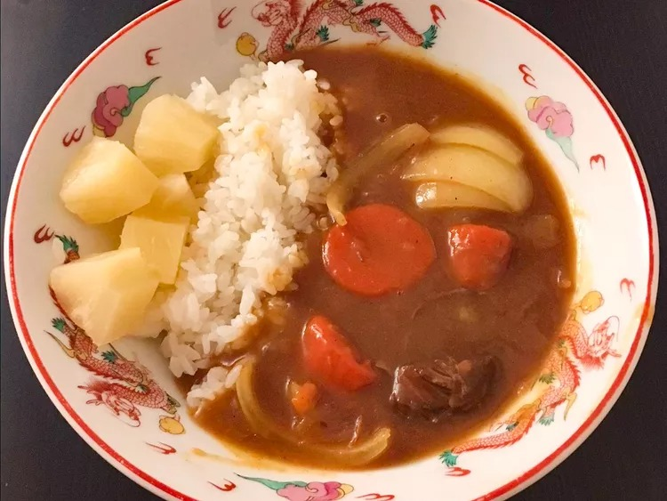

Japanese Curry

Description
Japanese curry is different from Indian or Thai curries. It is more of a brown stew and it can be mild or spicy, depending on your tastes. It can be served over white rice or with udon noodles. This recipe is very flexible; it can easily be made for more or less people.
Ingredients
- Vegetable oil
- Beef
- Onions
- Ketchup
- Worcestershire sauce
- Cayenne pepper
- Water
- Carrots
- Potatoes
- Japanese curry roux
Steps
- Heat oil in a 6-quart pot over medium-high heat. Add beef and saute until brown, 5 to 7 minutes. Add onions and cook until starting to soften, about 3 minutes. Add ketchup and Worcestershire sauce. Stir to coat. Add cayenne pepper. Pour in water to cover mixture by 1 or 2 inches. Add carrots and bouillon.
- Simmer, skimming fat off the surface of the broth as needed, for 30 minutes. Add potatoes. Stir in 1 package of curry roux and let dissolve; add remaining curry as needed to achieve desired thickness. Continue simmering until beef and vegetables are tender, about 30 minutes more.